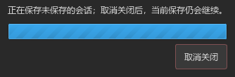
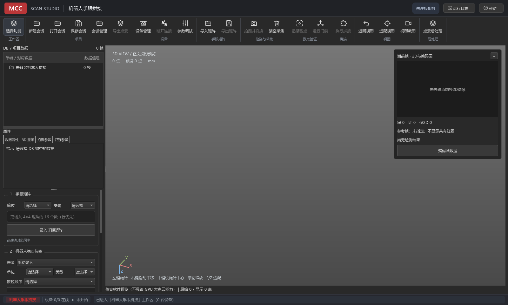

MultiCameraCalibration 1.13.19
第一批稳定性优化交付与评审说明
输入：软件稳定性评估与工程交接报告 V1.1。本批次在设备状态修复提交 b9a5c09 / 1.13.18 基础上，处理可独立验证的关闭保存、测试隔离及界面说明问题。
交付结论：本批优化已实现，52 项离线单元测试及核心脚本通过。本文件记录实际修改、验证证据和后续风险，可供阿金复核；不作为客户稳定版发布批准。
1. 用户可见变化
| 触发情形 | 原行为 | 本次行为 |
|---|---|---|
| 新版工作区：关闭时选择保存 | 局部事件循环等待保存结束，没有取消关闭入口。 | 显示保存等待提示和“取消关闭”。取消后窗口保留，当前保存继续，尚未启动的其他工作区保存停止；已完成的保存不回滚。失败时也保留窗口。 |
| 多相机外参标定成功 | 核心返回的“标定完成”前缀被界面再次添加。 | 使用核心消息与扫描状态组合，去除界面重复前缀。 |
| 底部状态栏 | 直接显示 connected、locked、matrix_loaded 等内部状态。 | 显示“已连接”“外参已锁定”“矩阵已加载，待验证”等中文含义；业务内部状态不变。 |
| 机器人导出矩阵 | 已有禁用门禁，但缺少原因说明。 | 根据状态提示“请先导入或录入手眼矩阵”“当前任务进行中，请等待完成后导出”或“导出当前手眼矩阵文件”；顶部命令同步提示与启用态。 |
| 查看融合结果属性 | 结果的相机字段可能为空。 | 空值显示“融合结果”，新增来源相机列表；来源记录不可用时显示“—”。保持来源帧计数，不推断缺失相机与输出坐标系。 |
2. 工程与测试变化
- 组件替换测试同时覆盖多相机、移动、转台、机器人四个渲染器，逐一验证相同点云对象的行为调用；预览组件数量随机器人工作区更新。
- test_core.py 的 CameraManager 检查使用 RVC=None 和 SDK 替身；覆盖无 SDK、无连接、越界索引、未注册相机和枚举异常。断言替身 X1/X2 Create 未调用，不再初始化本机真实 SDK。
- 保存等待增加活动标记：用户取消关闭并销毁提示框后，迟到的保存回调只结束该批关闭调度，不再访问提示框或启动下一工作区保存。
- 修正主窗口的三工作区、后处理已移除和 _dirty 占位等过期说明。
3. 验证记录
| 范围 | 结果 | 证据 |
|---|---|---|
| test_ui_architecture + test_robot_workspace | 23/23 通过；退出码 0。原报告中 4 != 3 的架构失败已修复。 | 完整日志 |
| test_ui_session_projects + test_background_lifecycle | 23/23 通过；退出码 0。包含多工作区保存重开、保存失败、取消关闭、取消后真实后台写盘完成及晚到回调。 | 完整日志 |
| test_ui_db_properties | 6/6 通过；退出码 0。覆盖来源相机、来源缺失及已有元数据/显示行为。 | 完整日志 |
| test_core.py | 核心脚本通过；退出码 0。包括标定、变换、拼接、参数估计、标定板与 SDK 替身检查。 | 完整日志 |
| 静态与界面检查 | 版本与日志一致；git diff --check 通过；检查两张真实 Qt 离屏截图。 | 见下方截图。 |
解释器：D:/Program Files/Anaconda/envs/rvc/python.exe。Qt 使用 offscreen，数据使用私有临时夹具。52 项为本批定向单元测试总数，核心脚本另外计算；不是对项目全部测试或原报告 13 个脚本连续三轮通过的声明。


4. 与原报告的问题对应
| 编号 | 本批进展 | 剩余边界 |
|---|---|---|
| QA-002 | 已修复并通过四工作区架构回归。 | 尚未执行原报告的全部 13 脚本连续三轮验收。 |
| TST-001 | test_core.py 已隔离真实 SDK。 | 未宣称整个仓库的所有测试都已分类隔离。 |
| STB-003 / UX-006 | 新版关闭保存增加可取消关闭的等待界面，且不终止当前写盘。 | 不是通用任务取消；后台 SDK 原生调用、无超时清理、强退兜底及 SDK 关闭顺序尚需专项处理。 |
| UI-001 | 重复标定日志前缀和底部英文状态已处理。 | 未做全软件文案替换；机器人业务区的部分验证说明仍保留 VERIFIED 等术语。 |
| UI-002 | 补充结果来源相机显示及空值说明。 | 没有变更数据格式，也未补录历史结果缺失的输出坐标系。 |
| UI-003 | 补充已有禁用门禁的具体原因提示。 | 保留矩阵与 VERIFIED 业务限制，没有放宽导出门槛。 |
| DOC-005 | 主窗口过期入口和占位注释已修正。 | 未全面重写旧帮助、README 或所有历史文档。 |
5. 后续优化与阿金评审要点
待处理：发布构建固定路径与缺库门禁（REL-001/BLD-002）、SDK 退出清理顺序和不可取消原生调用（STB-003）、显式任务描述与任务中心（ARC-004/UX-006）、机器人及转台完整夹具（QA-005）、实机/客户机/长稳（QA-003）、DPI 视觉验证（UI-004）。本批没有生成新安装包。
- 复核“取消关闭”语义：保留程序，当前保存继续；不将此按钮理解为回滚已经提交的保存或强制取消当前写盘。
- 在真实数据下检查中文状态、来源相机显示和导出禁用提示，确认是否符合现场使用习惯。
- 确定下一批优先做 SDK 退出安全还是构建交付门禁；两者均需专项验证，不能以本批离线通过替代。
评审状态：待阿金复核。本文件作为可交付评审材料，未通过其他消息渠道向阿金发送通知。
6. 修改文件与回退方式
实现涉及 backend_bridge.py、frame_database.py、main_window.py、session_projects.py、robot_control_panel.py；配套 test_core.py、test_ui_architecture.py、test_robot_workspace.py、test_ui_db_properties.py、test_ui_session_projects.py，以及 src/version.py、CHANGELOG.md 和本次 HTML/附件。
提交目标：origin/MultiCameraCalibration，使用当前配置的 Git 身份。精确提交号见最终交付回复；不将尚未生成的提交号写入源码版本。若需回退本批，以该提交执行 Git revert，保留已有 b9a5c09 设备状态修复；本批不迁移会话格式，不删除用户会话。